The problem
Large fleets run on reactive maintenance: a van breaks down, then it gets fixed. By then the damage is done. The vehicle is off the road, deliveries slip and the repair costs far more than catching it early.
Fleet managers already have the data, spread across telematics, spreadsheets and workshop logs, but no time to read it. They can’t see which vehicles are about to fail, what it will cost, or what to fix first.
Business goals
- Increase uptimekeep more vehicles on the road by predicting failures before they happen.
- Reduce total cost of ownershipreplace emergency repairs with planned, cheaper ones.
- Plug into existing toolsa smart assistant on top of the telematics fleets already use, not another system to learn.
- Grow into a bigger marketstart with large logistics fleets in Europe, then expand.
Who it’s for
Fleet managers, heads of fleet and operations, and CEOs of logistics and transport companies in Europe with large owned or leased fleets of trucks and vans, both electric and combustion.
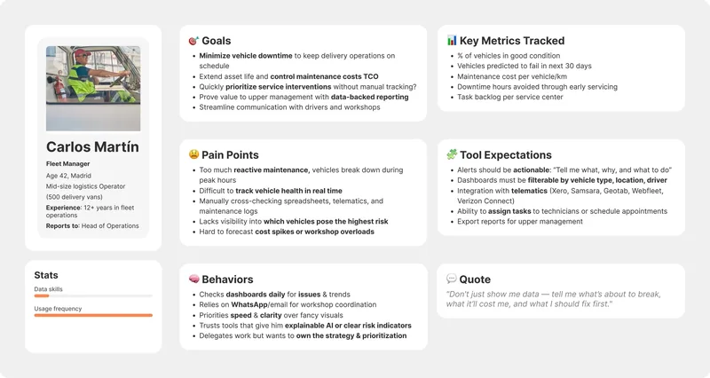
“Don’t just show me data. Tell me what’s about to break, what it’ll cost me, and what I should fix first.”
The vision
Move fleets from reactive to proactive.
An AI copilot that reads real-time vehicle data, predicts which parts will fail and when, explains why, and turns each prediction into the next action: a ticket, a workshop appointment or a report for management.
Success metrics
The metrics we designed the product to move, taken from what fleet managers already track:
- Fleet healthshare of vehicles in good condition.
- Early warningvehicles predicted to fail in the next 30 days.
- Downtime avoidedhours saved through early servicing.
- Maintenance costcost per vehicle and per kilometre.
- Workshop loadtask backlog per service centre.
The full process
Research, decisions and iterations, step by step.
Mapping the market
Before designing, I mapped the fleet-management ecosystem: telematics providers, asset and maintenance management, compliance, routing, fuel and EV charging. Predictive maintenance was the clearest gap, and the place where AI could add the most value on top of data fleets already collect.
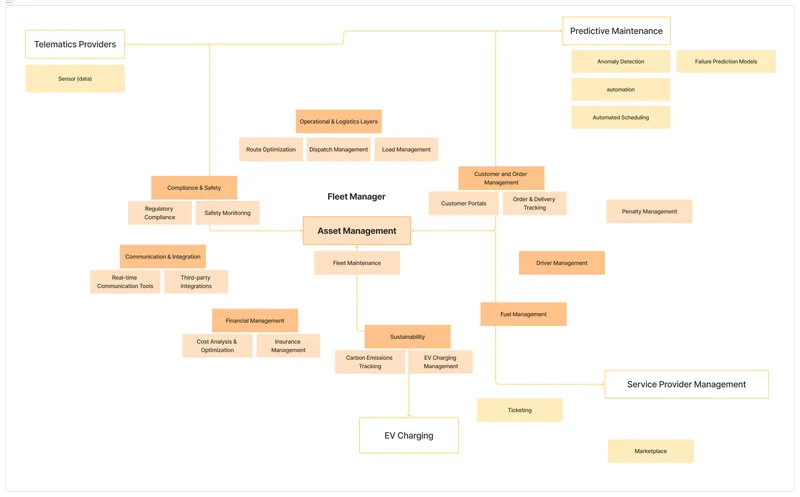
From interviews to wireframes
Customer insights became low-fidelity flows: a prioritised list of issues across the fleet, a vehicle page that summarises its condition in plain language with the cost of waiting, and an activity log so teams can see who snoozed, dismissed or resolved each alert.
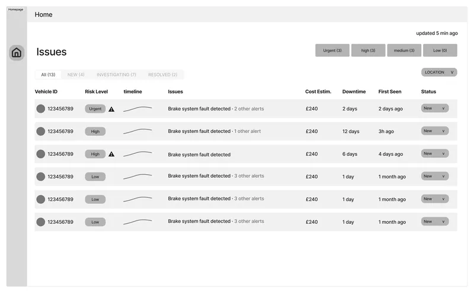
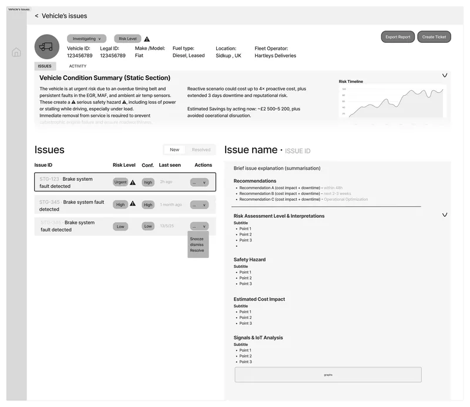
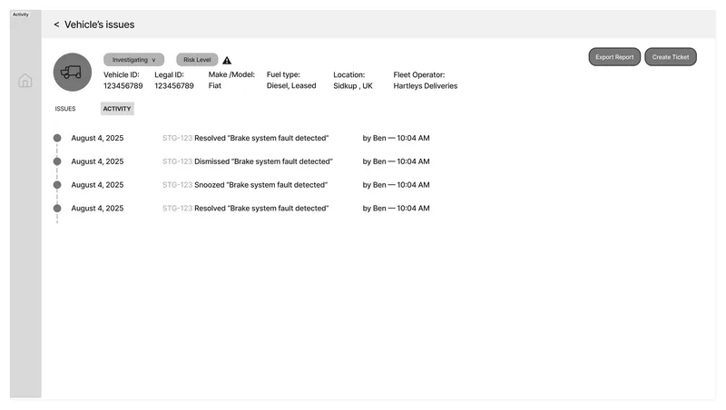
Key design decisions
- Money and time firstevery alert shows estimated cost and downtime next to the risk level, because that’s how managers decide what to fix first.
- Explainable AIeach prediction comes with a confidence level, a plain-language “why this matters” and a thumbs up or down, so trust grows and the model learns.
- Actions, not just alertscreate a ticket, assign a mechanic or book a workshop slot straight from the issue.
- Predicted next to realuptime and cost show today’s value and the prediction for the month, so the cost of doing nothing is visible.
- Ask Papayaa copilot panel that lists recommended actions, writes the follow-up email or explains a vehicle’s condition in more detail.
First MVP designs
The MVP covered the core loop: see the fleet’s health, open the riskiest vehicle, understand the problem, and schedule the fix. I prototyped flows quickly with AI tools such as Lovable and Base44 to test ideas with the team before polishing them in Figma.
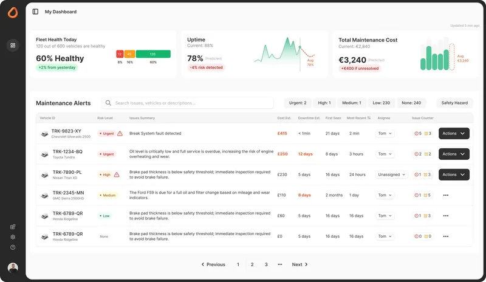
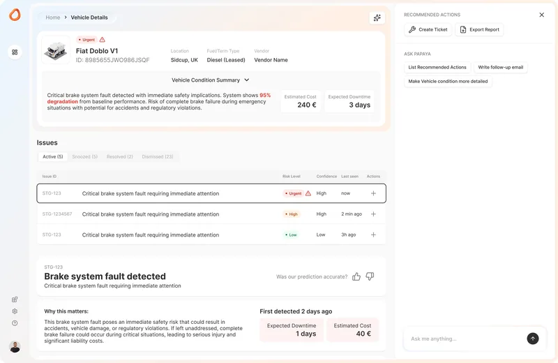
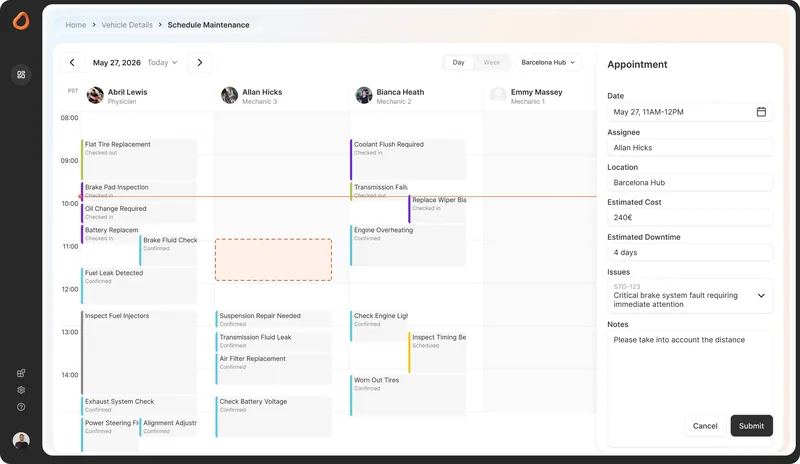
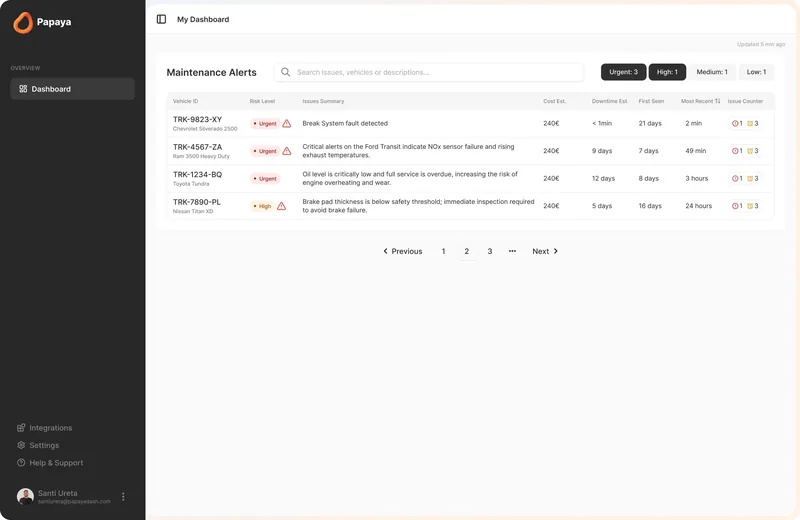
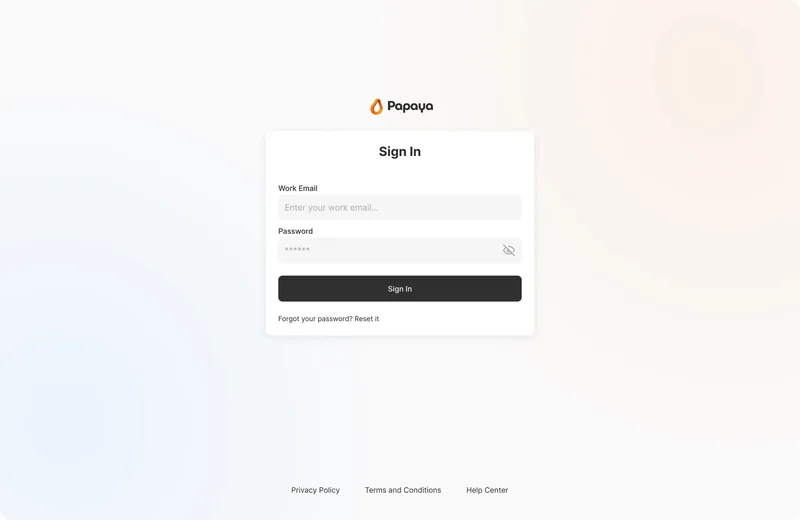
Landing page
For marketing, I designed the landing page that explained the product and recruited fleets for a Design Partner Program, so early customers could shape the product with their own data.
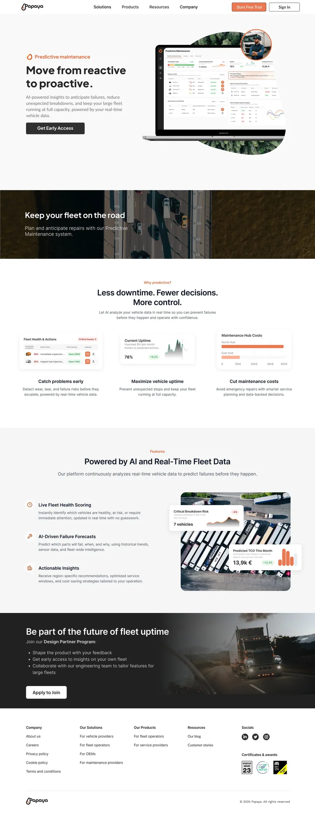
Outcome
A short, exploratory project: brainstorming the flows and validating the idea before writing any production code. Lovable and Base44 prototypes and the landing page were enough to show the value to real fleets.
- Real demand before a single line of codethe Design Partner Program brought in a long list of fleet operators who wanted to know more and were keen to sign up.
- Research to MVP in six monthsmarket map, persona, wireframes, MVP designs and a landing page.
- Higher product maturityresearch-backed decisions, user stories and priorities agreed with engineering, and a shared design foundation.